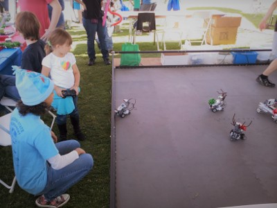
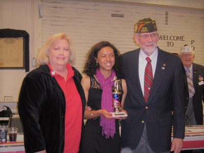

Awards
Willow Canyon High School
- Class of 2014 | Surprise, AZ
- Graduation Speaker, Top 1% (2014)
- AP Scholar Award: granted to students who receive scores of 3 or higher on three or more Advanced Placement exams. (2013)
- Varsity Golf Letterman (2010 - 2014)
- Academic Letterman (2010 - 2014)
- Student of the Month, September 2013: chosen based on qualities such as good character, leadership, citizenship, academic responsibility, good work ethic, and classroom participation.
FIRST Robotics
- FIRST Tech Challenge (FTC) | AZ State Competition
- Second Place Connect Award (2013)
- First Place Alliance (2012)
- Second Place Inspire Award (2012)

Veterans of Foreign Wars
- Voice of Democracy | Scholarship Competition
- District 3 Second Place Essay (2013)
- Post 10695 First Place Essay (2013)
- District 3 Second Place Essay (2012)
- Post 10695 First Place Essay (2012)
- Post 10695 Second Place Essay (2011)
City of Surprise
- Teen Advisory Board
- First Place Community Service Project: environmental awareness (2012)
- Outstanding Youth of the Year: for her exceptional efforts and dedication in bridging the gap between city and schools so more youths are given the opportunity to assist in community engagement events. (2011)

Scholarships
Arizona State University
- Leadership Scholarship Program | 2014 Cohort
- The Leadership Scholarship Program (LSP) began at Arizona State University in 1977 under the direction and leadership of Dr. Christine K. Wilkinson, Senior Vice President and Secretary of ASU. Each year, 25 exceptional student leaders are chosen to participate in LSP, a four-year program that offers these students the opportunity to learn and grow as leaders while giving back to the greater community through a cohort service project.
- Renovated Phoenix Tumbleweed Center for Youth Development: painted bedrooms, cleaned bathrooms, brought in/arranged furniture, and potted plants.
- Engaged the ASU community through hygiene drives, information event, and exposure to community service clubs.
Arizona State University
- President's Scholarship
- Scholarship awarded based upon academic qualifications, including SAT/ACT scores, class rank, and recalculated GPA.
National Center for Women & Information Technology
- Award for Aspirations | Semi-finalist
- Scholarship awarded for active participation in science and math programs, notable contributions to the community, and
demonstrated interest in pursuing higher education in Information Technology.
Asian Corporate & Entrepreneur Leaders
- Scholarship Winner | 2014
- In recognition of academic and leadership success, community service and future aspirations.
Sun City Elks
- Most Valuable Student | Semi-finalist
- Scholarship awarded to students who succeed in academic areas, civic involvement and other personal interests.
Enrichment Activities
Ron Brown Captains Program
- 2014 - 2018
- Ron Brown Scholarship Semi-finalist students engage with organizations and companies that may provide internships, special insights or job opportunities. A virtual, online depository of information will facilitate this exchange of connections and resources.
National Science Foundation
- National Youth Science Camp | AZ Delegate, 2014
- A residential science education program for young STEM enthusiasts the summer after they graduate from high school. Students from around the country (two are selected to represent each state and Washington, D.C.) are challenged academically in exciting lectures and hands-on studies, and have voluntary opportunities to participate in an outdoor adventure program, gain a new and deep appreciation for the great outdoors, and establish friendships that last a lifetime.
MIT Society of Women Engineers
- College Connections | 2013 - 2014
- Engaged in a formal college counseling and e-mentoring program with a current MIT student.
MIT Office of Engineering Outreach Programs
- MIT Online Science Technology Engineering Community (MOSTEC) | 2013 - 2014
- Participated in 6 month residency mentorship program administered by MIT staff and students.
- Completed a three-week online robotics course; programming C.
- Explored societal and ethical ramifications of today’s technology.
Maricopa County Leadership Experience
- 2011 - 2012
- Participated in government, community and environment learning activities.
- Served in community-sponsored non-profit organizations.
- Completed summer reading program.